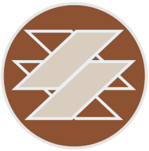

"Chào mừng các "không ai cả" đây là kênh không người xem của Samurice. Samurice là một người kể chuyện và trong kênh Youtube này các "không ai cả" sẽ được nghe những câu chuyện về thần thoại, vũ trụ, cuộc sống và nhiều thứ nữa.." Vừa rồi là phần mô tả của kênh. "Không ai cả" ở đây được Đạt (chủ kênh) giải thích rằng anh từng tạo ra kênh này và suy nghĩ rằng sẽ không có ai xem nên video của anh đang nói chuyện với "không ai cả". Cho đến một ngày có một viewer nhận ra anh và từ đó mọi người đều biết đây là kênh của Samurice. Đường link kênh
